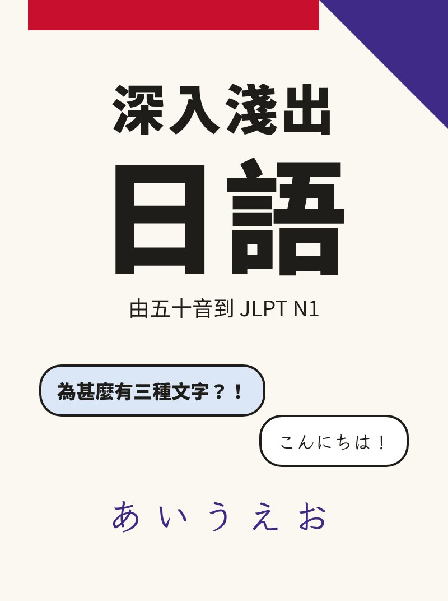

想學新語言？看這本就對了
深入淺出日語
a.k.a. Head First Japanese
由五十音學到 JLPT N1，寫給本來就會中文、也懂英文的你。
這門課專為一種讀者而設：你從小講廣東話或普通話，看得懂繁體字，英文也不錯，現在想把日語學到 JLPT N1，可能為了在日本工作、讀研究院，或者只是想不靠字幕看完一套日劇。
你比歐美學生起步快得多。日語用的漢字，你大多一看就知道意思：出口、電話、大学。可是讀音完全是另一回事，而且漢字還會騙人：手紙是信，勉強是讀書。這本書會一直提醒你哪裏可以靠中文，哪裏一定要放下中文。
按任何赤い字就可以聽到讀音。右上角的「ふりがな」按鈕可以隱藏漢字上面的讀音，用來測試自己。由本書使用說明開始吧。
JLPT 五個級別
日本語能力試驗（JLPT）由日本國際交流基金和日本國際教育支援協會主辦，每年考兩次，2026 年是 7 月 5 日和 12 月 6 日（海外考場不一定兩次都有）。級別由 N5（最淺）到 N1（最深），本書每個部分對應一級。
| 級別 | 程度 | 計分科目（滿分） | 合格分 總分／各科最低 | CEFR 參考 |
|---|---|---|---|---|
| N5 | 看懂用平假名、片假名和基本漢字寫的短句，聽懂慢速的日常對話 | 言語知識・讀解（120） 聽解（60） | 80 38、19 | 80 分以上：A1 |
| N4 | 看懂日常話題的簡單文章，聽懂稍慢的日常對話 | 言語知識・讀解（120） 聽解（60） | 90 38、19 | 90 分以上：A2 |
| N3 | 看懂報紙標題和日常話題的具體文章，聽懂接近正常語速的對話 | 言語知識（60） 讀解（60） 聽解（60） | 95 19 | 95–103：A2 104 以上：B1 |
| N2 | 看懂報章評論和解說，聽懂正常語速的新聞和對話 | 言語知識（60） 讀解（60） 聽解（60） | 90 19 | 90–111：B1 112 以上：B2 |
| N1 | 看懂邏輯複雜的社論和抽象文章，聽懂正常語速的講座和討論 | 言語知識（60） 讀解（60） 聽解（60） | 100 19 | 100–141：B2 142 以上：C1 |
每一科都要過最低分！總分再高，一科不合格也算不合格。
合格分來自 jlpt.jp「合否判定」頁；CEFR 參考由 2025 年 12 月考試起印在成績單上，只供參考。報考前請再看一次 jlpt.jp，因為考試時間和細則會修訂。